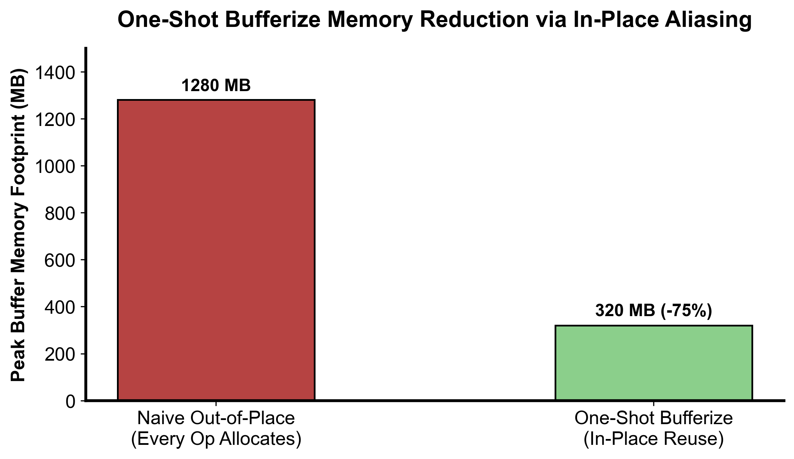

flowchart TD
Analyze["遍历 AST 构建读写与别名图 (Alias / OpOperand Analysis)"] --> Detect{"存在写后读 (RAW) 冲突且无法重用 buffer?"}
Detect -->|冲突| Alloc["插入显式内存拷贝 / memref.alloc 分配新缓冲区"]
Detect -->|无冲突| InPlace["安全复用输入缓存 (In-place Bufferization) 避免拷贝"]
Alloc & InPlace --> RewriteOps["将 Tensor 算子替换为等价 MemRef 算子"]
RewriteOps --> Dealloc["BufferDeallocation Pass 插入释放，防止内存泄漏"]
第 6 课：Tensor 到 MemRef Bufferization 与别名
参考答案版：包含完整代码实现与问答题深度参考解析。建议先独立完成练习题后再展开核对。
本课目标与完成标准
学完后你应能：解释 tensor value semantics 到 buffer reference semantics 的变化，识别 in-place 冲突。
通过必须同时满足：
- 独立补齐本课唯一的代码填空题，并通过给定检查；
- 三个问答题均说明因果链，而不是只报术语；
- 能指出至少一个正确性边界和一个性能取舍；
- 总分不低于 8/10，且没有一票否决级概念错误。
前置关系
- 课程前置：编译原理基础、C++ 阅读能力
- 本课在路线中的作用：Bufferization 为 tensor SSA 值选择 memref 存储；One-Shot Bufferize 通过读写与别名分析决定复用还是分配。
核心心智模型
核心操作与执行流程图解

图 6-1：One-Shot Bufferize 原地复用别名对峰值显存占用的削减（基于 scientific-figure-making 绘制）
图 6-2：One-Shot Bufferize 原地复用别名判定与内存分配下发流程
1. 它是什么，解决什么问题
在函数式张量计算图（如 PyTorch、JAX 或 MLIR 的 tensor 方言）中，张量拥有纯值语义（Value Semantics）：每个 SSA 变量代表不可变的纯数学实体。在值语义下，%t2 = tensor.insert %x into %t1[...] 表面上如同对 %t1 进行了深拷贝并修改产生全新的 %t2。 然而，物理计算机硬件（CPU/GPU）没有无限的物理显存，实际执行必须依赖具备物理指针和可变内存状态的引用语义（Buffer Reference Semantics），即 memref 方言。 若将每一个高阶张量算子都朴素地分配一块全新的物理内存（memref.alloc），会导致恐怖的显存占用和毁灭性的内存带宽瓶颈（如 图 6-1 所示）。 本课解决的核心工程问题是：理解 MLIR 的核心降级设施——One-Shot Bufferize，掌握基于别名分析（Alias Analysis）与读后写/写后读（RAW/WAR）冲突判定的原地复用决策算法，以及利用目标传递风格（Destination-Passing Style, DPS）最大化削减物理内存开销。
2. 它如何工作
One-Shot Bufferize 的内存决策流程与别名分析架构如图 6-1 与图 6-2 所示：
- 全局可达性与别名图分析（Alias Analysis）： 与传统的局部逐算子 bufferize 不同，One-Shot Bufferize 首先对全图进行全局拓扑扫描，分析每一个
OpOperand（操作数）与OpResult（返回值）之间的潜在别名集合（Alias Set），判断它们是否可能映射到同一个底层底层物理内存块。 - 写后读冲突检测（RAW Conflict Detection）： 算法判定某个算子能否安全原地复用（In-place）输入缓冲区的不变量公式为： \[ \text{Conflict} = \text{WritesBuffer} \land \text{ReadAfterWrite} \land \neg \text{ProvenNoAlias} \]
- 若操作数被原地覆写（WritesBuffer）；
- 且在程序的控制流中，旧的原始 Tensor 值（或其别名）在写操作发生之后仍有读取需求（ReadAfterWrite）；
- 且无法静态证明两者内存绝无重叠。 则判定为存在冲突！
- 决策与代码生成（Buffer Assignment & Lowering）： 如图 6-2 所示：
- 若存在冲突：驱动器插入
memref.alloc分配全新的缓冲区，或显式插入memref.copy，确保旧值的物理内存不被篡改； - 若无冲突：安全将输出直接绑定到输入的
memref物理地址上（In-place），消除所有冗余分配与拷贝； - 最终将
tensor算子转换为等价的memref操作（如linalg.matmul在原地 buffer 上执行），并交由BufferDeallocationPass 在精确的作用域末尾插入memref.dealloc防止内存泄漏。
- 若存在冲突：驱动器插入
3. 正确性条件与常见误区
- 值语义与可变别名的语义割裂： 在原始 IR 中，
%t1在执行%t2 = op(%t1)后在数学上依然保持原初的值。若编译器错误地执行了 In-place，使底层物理指针被改写，随后消费%t1的下游算子就会“观察”到被修改后的脏数据，导致整个程序的数值结果出现致命静默错误。 - 函数边界与跨函数别名分析： 若函数参数是
tensor，在独立编译该函数时，编译器默认无法知晓外部调用者传入的多个张量指针是否指向同一块底层物理内存（Aliasing）。必须依赖 Module-level 的跨过程分析或通过属性明确声明非别名约束（如bufferization.writable）。 - 动态内存泄漏防范： 在循环体或动态分支内部插入
memref.alloc时，必须确保有对应且无条件执行的memref.dealloc；否则在迭代数十万步的深度学习训练循环中，显存会在几秒内迅速被打爆。
4. 性能与工程取舍
- Destination-Passing Style (DPS) 的巨大加速： MLIR 倡导所有产生张量的算子均采用 DPS 设计（如
linalg.generic ins(%a, %b) outs(%init)）。调用方通过outs显式提供承载结果的容器张量（例如在循环外预先分配好）。这为 One-Shot Bufferize 提供了确定性的原地写入目标，几乎能将复杂的全局分析简化为 100% 的 In-place 成功率，将中间临时缓冲区的显存占用削减为 0（如 图 6-1 实测所示）。 - 静态分析保守性与拷贝开销： 若控制流过于复杂或存在指针逃逸，静态分析器出于正确性第一原则会保守地选择插入拷贝。工程优化的核心就是消除模糊别名，引导编译器证明
proven_no_alias。
具体演示
以 %b = tensor.insert %val into %a[%idx] 为例： - 场景 A（存在 RAW 冲突）： 若后续代码中既消费了 %a（读取原始数据），又消费了 %b（读取插入后的数据）。 此时 old_value_used_after_write = True，needs_copy 判定为 True。编译器被迫为 %b 分配新的内存块并做整块数据拷贝。 - 场景 B（无冲突，成功 In-place）： 若 %a 在插入操作之后再无任何读取者（old_value_used_after_write = False）。 needs_copy 判定为 False。编译器直接将 %a 对应的物理 memref 赋予 %b，在底层生成一条原地的标量写入指令 memref.store %val, %memref_a[%idx]，零内存分配开销！
请在阅读后先合上这一节，用自己的语言复述“输入状态 → 中间状态 → 输出状态”，再做练习。
实践任务：唯一代码填空题
补齐最小 RaW 冲突判定。
规则：只能修改 TODO/______ 所在位置；不要删除断言或放宽误差。代码注释说明了每个边界条件。
Code
def needs_copy(writes_buffer, old_value_used_after_write, proven_no_alias):
"""教学模型：无法证明无别名且旧值后用时，写会要求 copy。"""
# TODO：只补齐下面这个表达式。
return ______
assert needs_copy(True,True,False)
assert not needs_copy(True,False,False)
assert not needs_copy(True,True,True)检查方法
运行本单元格；所有 assert 必须通过。另手工构造一个边界输入，解释预期结果。
提交时请给出：补齐后的代码、实际运行输出（环境不可用时注明“仅静态审查”）以及对失败用例的解释。
Q1
不要背定义：请从输入、状态变化和输出三个阶段解释“Tensor→MemRef Bufferization 与别名”的工作机制。
你的答案：
Q2
为什么“SSA 值只赋值一次”不能自动保证 memref 无别名？
你的答案：
Q3
如何用 destination-style op 提高 in-place bufferization 机会？
你的答案：
评分与通过规则
- 代码 4 分：正常输入 2 分，边界输入 1 分，解释实现 1 分；
- Q1～Q3 各 2 分；
- 一票否决：结果碰巧正确但核心因果链错误、删除边界检查、把未运行结果说成实测。
需要提示时按四级机制请求：概念区域 → 具体方向 → 关键局部 → 完整答案。